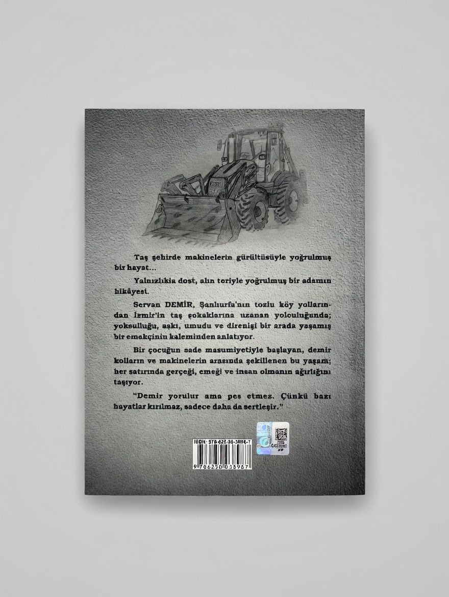

Taş şehirde makinelerin gürültüsüyle yoğrulmuş bir hayat... Yalnızlıkla dost, alın teriyle yoğrulmuş bir adamın hikâyesi.
Servan DEMİR, Şanlıurfa’nın tozlu köy yollarından İzmir’in taş sokaklarına uzanan yolculuğunda; yoksulluğu, aşkı, umudu ve direnişi bir arada yaşamış bir emekçinin kaleminden anlatıyor.
"Demir yorulur ama pes etmez. Çünkü bazı hayatlar kırılmaz, sadece daha da sertleşir."
Bu kitap 0 kişi tarafından beğenildi.